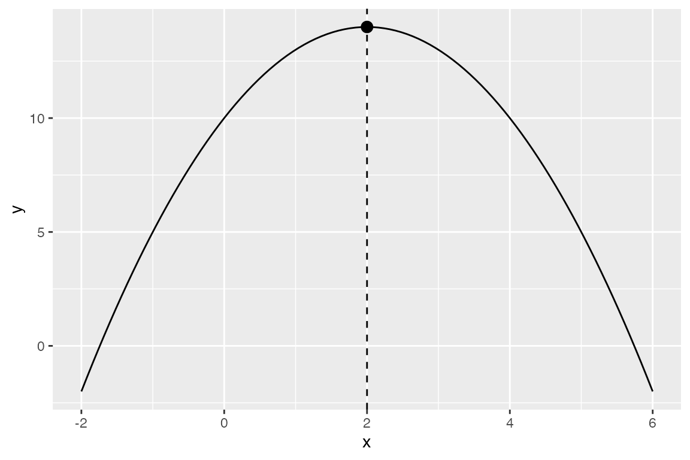
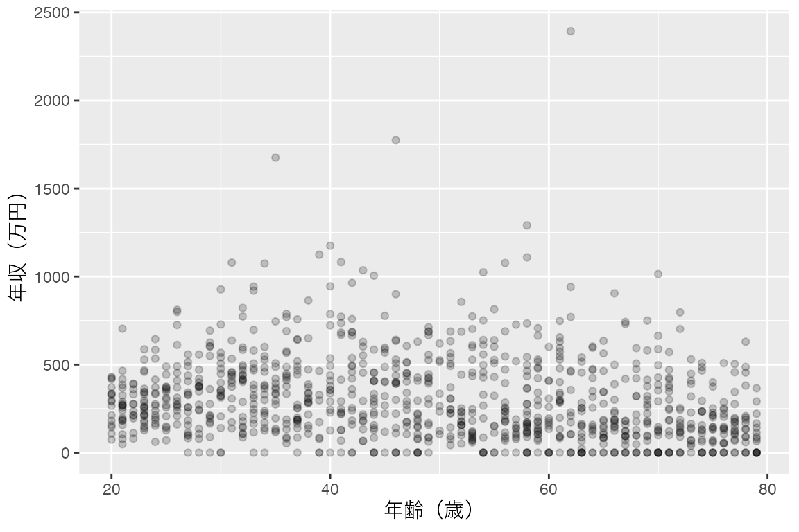

多項式回帰
年齢と年収のように、途中で向きが変わる関係を、説明変数の2乗を加えた回帰で表します。年収が最も高くなる年齢を求め、直線の回帰と比べます。
1 目的
年収は年齢とともにどう変わるのでしょうか。何歳ごろが最も高いのでしょうか。このページでは、成人1,000人が生活や仕事について答えたという設定の架空の調査データを使い、年齢と年収の関係を調べます。
年齢と年収の関係は、若いうちは上がり、ある年齢を過ぎると下がる、という山の形になりがちです。直線の回帰では、このように途中で向きが変わる関係を表せません。そこで、説明変数の年齢に加えて、年齢の2乗も説明変数にします。このように、説明変数の2乗や3乗を加える回帰を多項式回帰と呼びます。2乗までを使うと、当てはめ値は放物線の一部を描きます。
まず、復習として年収を年齢に回帰し、直線の結果を確かめます。次に、年齢の2乗を加えて同じ分析を行い、年収が最も高くなる年齢と、2つのモデルの当てはまりを比べます。分析のコードはAIに作ってもらい、自分のPositronで実行して確かめましょう。
「第8節（2乗項を加える）」までを読んで実行し、「第9節（練習問題）」に取り組んでください。年収のように右に長い裾を引く変数の扱いは、対数変換のページで扱います。
2 準備
調べたいこととデータ
ここでは、模擬調査データを使います。成人1,000人が生活や仕事についてのアンケートに答えたと想定した架空のデータで、1行が1人です。今回使うのは、次の2列です。
| 列名 | 内容 | 単位・値 |
|---|---|---|
age |
年齢 | 20〜79歳、1歳刻みの整数 |
income |
個人の年収 | 万円単位で、0以上の整数。0は年収がないことを表し、未回答ではありません |
年収が0の人も、そのまま分析に含めます。このページでは年収の対数をとらないので、0を除く必要はありません。
2次関数の復習
\(x\) の2乗を含む式 \(y = a x^2 + b x + c\) を、2次関数と呼びます。グラフは放物線になり、\(a\) が負なら山の形、正なら谷の形です。山の頂上、または谷の底を頂点と呼び、頂点の \(x\) の値は次の式で求められます。
\[ x = -\frac{b}{2a} \]
例えば \(y = -x^2 + 4x + 10\) では、\(a = -1\)、\(b = 4\) なので、頂点は \(x = -4 \div (2 \times (-1)) = 2\) です。
グラフは \(x = 2\) で頂点の14に達し、その左右で対称に下がる山の形です。このページでは、年齢を \(x\)、年収を \(y\) にあてはめ、年収が最も高くなる年齢をこの式で求めます。
ファイルとRの準備
RとPositronの導入、フォルダの開き方やコードの実行方法は、「RとPositronのセットアップ」で確認してください。Positronで授業用フォルダを開き、今回のコードを保存するRスクリプトを用意します。例えば、polynomial-regression.R という名前で保存してください。
模擬調査データのCSVを、Positronで開いている授業用フォルダに保存してください。ファイル名は mock_survey.csv です。対数変換などのページで保存したCSVがこのフォルダにあれば、そのファイルを使えます。コードブック（データの説明書）には、すべての列の説明があります。
readr はCSVの読み込み、dplyr は年代ごとの集計、ggplot2 は作図に使います。tidyverseを導入済みなら、追加のインストールは不要です。
CSVの読み込みと年齢別の年収
まず、CSVを読み込み、survey という名前で保存します。nrow() で、1,000人分あることを確認してください。
survey <- readr::read_csv("mock_survey.csv", show_col_types = FALSE)
nrow(survey)[1] 1000年齢と年収の散布図を描きます。点が重なるので、半透明にしています。
ggplot2::ggplot(survey, ggplot2::aes(x = age, y = income)) +
ggplot2::geom_point(alpha = 0.2) +
ggplot2::labs(x = "年齢（歳）", y = "年収（万円）")
散布図では、どの年齢の人も年収が大きく散らばっていて、年齢による違いは読み取りにくいです。そこで、10歳刻みの年代ごとに、人数と平均年収を求めます。%/% は割り算の商（整数部分）を求める記号で、age %/% 10 * 10 は、例えば37歳を30に、62歳を60にします。mutate() でこの値を age_group という列に入れ、group_by() と summarise() で年代ごとに集計します。
survey |>
dplyr::mutate(age_group = age %/% 10 * 10) |>
dplyr::group_by(age_group) |>
dplyr::summarise(n = dplyr::n(), mean_income = mean(income))# A tibble: 6 × 3
age_group n mean_income
<dbl> <int> <dbl>
1 20 167 301.
2 30 167 375.
3 40 167 364.
4 50 167 302.
5 60 166 255.
6 70 166 189.各年代に166人か167人がいます。平均年収は、20代の約301万円から30代の約375万円へ上がり、40代では約364万円とほぼ同じで、50代以降は下がっていきます。年齢とともに年収は上がり続けるのでも、下がり続けるのでもなく、30代から40代あたりを頂上とする山の形をしていそうです。
3 分析の仕様を言葉にする
準備で求めた平均年収は、山の形をしていそうでした。ここでは順を追って、まず年収を年齢の1次関数、つまり直線で表すモデルから始めます。これまでに学んだ単回帰と同じ分析です。直線の結果を確かめておくと、後で2乗項を加えたときに、何が変わったかを比べやすくなります。
この直線のモデルで知りたいことは、年齢が1歳高いと、年収が平均で何万円違うかです。
| 項目 | 今回の仕様 |
|---|---|
| データ | 読み込んだ survey |
| 対象 | 1,000人全員。年収が0の人も含める |
| 被説明変数 | income（年収、万円単位の整数、0〜2,393） |
| 説明変数 | age（年齢、20〜79歳の整数） |
| モデル | 切片を含む単回帰。年収を年齢に回帰する |
| 数値の出力 | summary() の結果と、分析に使った人数 |
直線のモデルは単回帰の復習なので、ここでは図を描きません。直線は、「第8節（2乗項を加える）」で2乗項を加えたモデルと重ねて描きます。
4 AIへの指示例
AIには、上の表をもとにRコードを作ってもらいます。分析は、返ってきたコードを自分のPositronで実行して行います。AIには変数名や値の範囲などの説明だけを伝え、CSVや個々の回答は渡しません。
単回帰モデルのページと同じ組み立てなので、ここでは全文だけを示します。
返ってきたコードをPositronのスクリプトに貼り、準備コードに続けて実行します。実行後は「第6節（検証チェックリスト）」と照らし合わせ、必要に応じて下の参照コードも開いてください。エラーが出たら、個人の回答データを含めず、エラーメッセージと該当するコードをAIに伝えて修正を依頼してください。
5 参照コードと出力
自分のコードを実行してから開き、結果を照合してください。
6 検証チェックリスト
数値が大きく違う場合は、回帰式とCSVのファイル名を確かめます。人数が1,000人より少なければ、AIが年収0の人を除いていないかを確認してください。
7 結果の解釈
今回の回帰直線は、丸めると次の式です。年収の単位は万円です。
\[ \widehat{\text{年収}} = 441.921 - 2.915 \times \text{年齢} \]
年齢が1歳高いと、年収の当てはめ値が約2.9万円低いという関係です。年齢の行のp値は 2.84e-11 で、p < .001 と報告します。R²は約0.043で、このモデルは年収のばらつきの約4.3%を説明しています。
ただし、準備で求めた年代ごとの平均年収は、20代から30代にかけて約74万円上がっていました。直線は、年齢が上がるにつれて年収が一定の幅で下がり続ける、という形しか表せません。20代から30代への上昇は直線に表れず、30代から40代を頂上とする山の形も消えています。次の節では、年齢の2乗を説明変数に加えて、この山の形を表します。
8 2乗項を加える
知りたいことと仕様の変更
ここからが、このページの主題です。知りたいことを「年齢が1歳高いと、年収は平均で何万円違うか」から、「年収は年齢とともにどう変わり、何歳ごろが最も高いか」に変えます。そのために、年齢に加えて年齢の2乗を説明変数にします。
\[ \text{年収}_i = \beta_0 + \beta_1 \times \text{年齢}_i + \beta_2 \times \text{年齢}_i^2 + \varepsilon_i \]
\(\beta_2\) が負なら上に凸（山の向き）、正なら下に凸（谷の向き）の放物線になります。ただし、当てはめ値として使うのは、データのある20〜79歳の部分だけです。説明変数は年齢と年齢の2乗の2つなので、重回帰の一種です。年齢の2乗の項を、2乗項と呼びます。
仕様の変更は、次のとおりです。データ、対象、被説明変数、切片の扱いは変えません。
| 項目 | 2乗項を加える回帰での仕様 |
|---|---|
| データと対象 | 最初の回帰と同じ survey の1,000人 |
| 説明変数 | age と、age の2乗。Rの回帰式では I(age^2) と書く |
| モデル | 切片を含む重回帰。年収を年齢と年齢の2乗に回帰する |
| 数値の出力 | summary() の結果と分析人数。年収が最も高くなる年齢、20・40・60歳の当てはめ値。最初の回帰との自由度調整済みR²の比較 |
| 図 | 横軸が年齢、縦軸が年収の散布図に、直線と放物線の当てはめ値を重ねる。点は半透明にし、信頼帯は表示しない。線は全員のデータから求め、縦軸の表示範囲だけを0〜1,000万円にする |
Rの回帰式の中で ^ は、変数の2乗とは別の意味を持ちます。そのため、2乗を表すときは I() で囲み、I(age^2) と書きます。I() は「中の式を、ふつうの計算として扱う」という指定です。
最初のプロンプトを自分で修正し、AIにこの分析を依頼してください。 説明変数に I(age^2) を加えること、頂点の年齢と当てはめ値を計算すること、2つのモデルの自由度調整済みR²を並べること、散布図に直線と放物線を重ねることが伝わるか確かめます。最初のプロンプトのうち、次の3か所は、そのままでは今回の分析と食い違うので書き換えます。
- 「単回帰分析」は、年齢の2乗を加えた回帰分析に変える。
- 「ageだけを説明変数とし」は、
ageとI(age^2)を説明変数にする指定に変える。 - 「変数の変換や標準化…はしないでください」は、年齢の2乗を加える以外の変換をしない、という指定に変える。
図の指定も加えます。年収がとくに高い人がいるため、縦軸を全員分の範囲にすると、2本の線の違いが見えにくくなります。上の表のとおり、線は全員のデータから求め、縦軸の表示範囲だけを狭めるよう伝えてください。
確認と解釈
summary() の結果に age の行しかない場合は、「問2」で扱う書き方の問題があります。AIが2乗の列を survey に作ってから回帰するコードを返した場合も、列の中身が age の2乗で、係数が上と一致すれば正解です。
AIが poly(age, 2) を使うこともあります。poly() は、何も指定しないと2乗とは別の形に変換した値を使うので、当てはめ値は同じでも係数が上の値と違い、頂点の式には使えません。poly(age, 2, raw = TRUE) とするか、I(age^2) に書き直してください。
| モデル | R² | 自由度調整済みR² | 人数 |
|---|---|---|---|
| 直線 | 0.043 | 0.042 | 1,000 |
| 2乗項を加える | 0.071 | 0.069 | 1,000 |
年収の当てはめ値は、年齢の係数と2乗の係数から、次の式で表されます。
\[ \widehat{\text{年収}} = 120.425 + 11.958 \times \text{年齢} - 0.1507 \times \text{年齢}^2 \]
2乗の係数が負なので、当てはめ値は山の形です。頂点の式に係数をあてはめると、\(-11.958 \div (2 \times (-0.1507))\) で約39.7歳です。年収の当てはめ値は約40歳で最も高く、約358万円です。 20歳では約299万円、40歳では約358万円、60歳では約295万円です。20歳から40歳にかけて約58万円上がり、40歳から60歳にかけて約62万円下がります。
2次式では、個々の係数を「年齢が1歳高いと何万円」とは読みません。年齢の係数11.958は、年齢の2乗を一定にして年齢だけを変えたときの違いを表しますが、年齢が変われば2乗も必ず変わるからです。ここでは、頂点の年齢と、いくつかの年齢での当てはめ値で、放物線全体の形を読みます。
当てはまりを比べるには、自由度調整済みR²を使います。同じ人の同じ被説明変数について、元の説明変数を残したまま新しい説明変数を加えると、R²は下がりません。役に立たない説明変数を加えても、R²はわずかに上がることがあります。そこで、説明変数の数を考慮してR²を割り引いた値が、自由度調整済みR²です。自由度調整済みR²は、説明変数を加えても、当てはまりがあまり良くならなければ下がります。summary() の出力では Adjusted R-squared と表示され、単回帰モデルのページで紹介した「調整済み決定係数」と同じものです。
自由度調整済みR²は、直線の約0.042から、2乗項を加えて約0.069に上がりました。年齢の2乗を加えることで、年収のばらつきをより多く説明できています。ただし、2乗項を加えたモデルのR²は約0.071で、年収のばらつきの約93%は説明できていません。
最後に、この結果から言えないことを確認します。今回のデータは、ある時点で、異なる年齢の人に一度だけ尋ねた調査です。このようなデータを横断データと呼びます。40歳の人と60歳の人の年収の違いは、同じ人が40歳から60歳になると年収が下がることを示すとは限りません。生まれた年代による働き方の違いなど、年齢以外の違いも含まれているからです。同じ人の年収の変化を調べるには、同じ人を何年も追跡して調査したデータが必要です。
本文の分析はここまでです。続いて、「第9節（練習問題）」に取り組んでください。
9 練習問題
問1：結果を説明する
本文の結果を見た友人が、次のように言ったとします。
年齢の係数が11.958だから、年齢が1歳上がると年収は約12万円増えるんだね。それに、40歳を過ぎると年収が下がるということは、自分も40歳を過ぎたら年収が下がっていくんだ。
この2つの文の、それぞれどこが本文の結果と合わないでしょうか。本文の数値を使って、2乗項を加えたモデルから分かることを3〜4文で説明してください。
問2：動くコードが指示どおりかを確かめる
「年収を年齢と年齢の2乗に回帰したい」と指示したところ、次のコードが返ってきたとします。
model_check <- lm(income ~ age + age^2, data = survey)
summary(model_check)エラーなく実行でき、人数も1,000人です。このコードは、指示とどこが違うでしょうか。summary() の出力のどこを見れば気づけるかも答えてください。
10 発展（任意）
3次式を加える
2乗に加えて、年齢の3乗も説明変数にできます。3次式では、当てはめ値の曲線が向きを2回まで変えられます。
\[ \text{年収}_i = \beta_0 + \beta_1 \times \text{年齢}_i + \beta_2 \times \text{年齢}_i^2 + \beta_3 \times \text{年齢}_i^3 + \varepsilon_i \]
本文の2次式に I(age^3) を加えたモデルを推定し、次の点を確かめてください。
- 自由度調整済みR²は、2次式からどれだけ変わったか。
- 散布図に2次式と3次式の当てはめ値を重ねると、2本の線はどこで違うか。
次数を上げるほど、曲線は手元のデータの細かな凸凹に合わせて曲がります。当てはまりの改善が小さいのに次数を上げると、解釈が難しくなるうえ、別のデータには当てはまらないモデルになりがちです。2つの結果を見て、今回のデータで3次式まで使う必要があるかを考えてください。
次に読むページ
年収は右に長い裾を引く変数でした。年収の違いを金額ではなく割合で考える方法は、対数変換のページで扱います。
最終更新: 2026-10-19